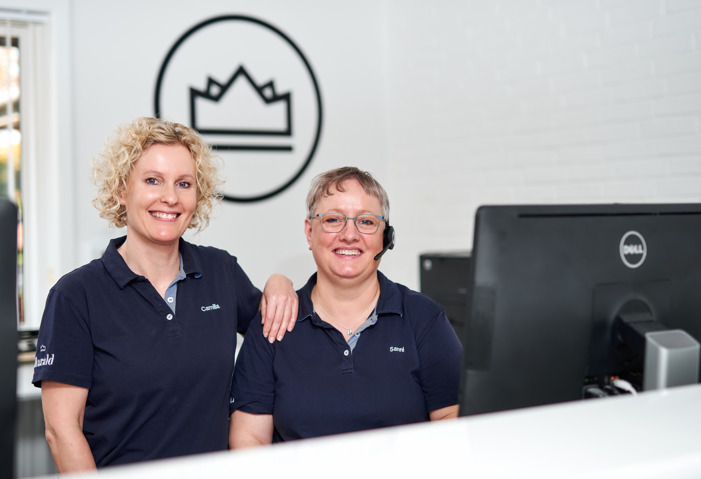
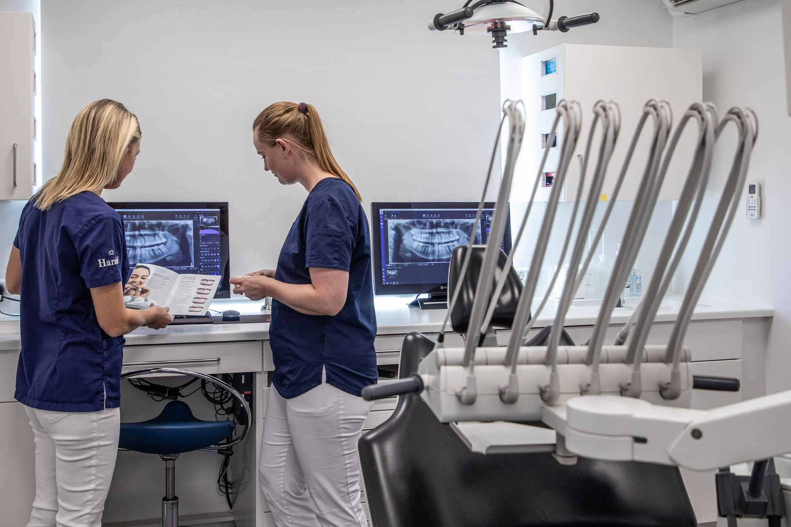
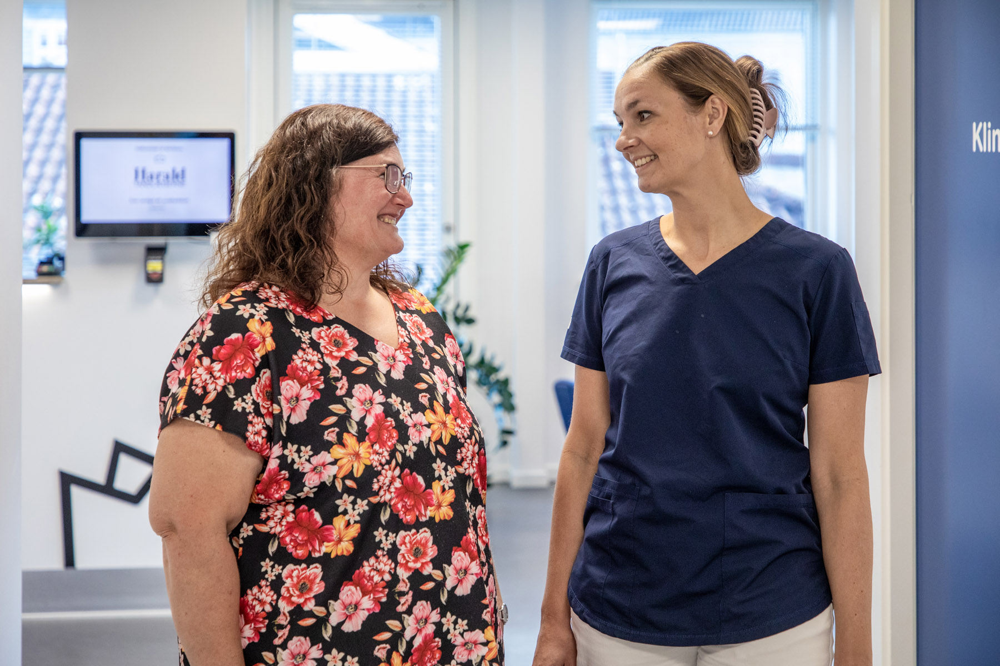

Arbejdsmiljø og kultur
Harald Tandlægerne lægger stor vægt på et positivt arbejdsmiljø og en stærk kultur.
Ordentlighed
For os rummer ordenlighed, at vi:
- Behandler hinanden respektfuldt og rummer forskellighed
- Er til at stole på
- Hjælper, hvor vi kan og står på mål for det, vi tror på.
Vi ønsker ikke kun ordenlighed overfor vores patienter, kollegaer, familie og venner, men også over for samfundet og miljøet.

Fællesskab
Vores motivation, banal som vital, er en levende, lærende organisation med højt til loftet og kort til kollegaerne.
Harald Tandlægerne er 100% ejet af tandlæger, hvor faget og patienterne er mindst lige så vigtige som deres indtjening.
Vi afholder interne kurser og arrangementer for at styrke fællesskabet.

Kvalitet
Vi stræber efter at være en tand foran og sikre høj faglighed og kvalitet.
- Røntgenkurser
- ClearCorrect
- Kurser i æstetisk tandbehandling
- Førstehjælpskurser
- Endodonti

Arbejdsglæde
Driften af vores klinikker bliver understøttet af vores hovedkontor, som varetager fælles funktioner.
Vi fejrer begivenheder som årsmøder, fødselsdage og jubilæer.
Patienten i centrum
Vi lægger vægt på sikkerhed og tryghed for vores patienter.
